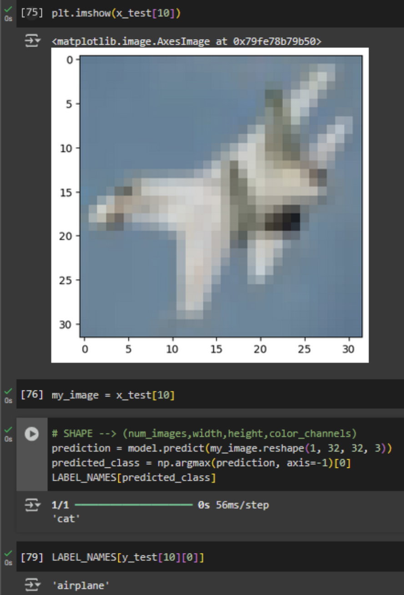
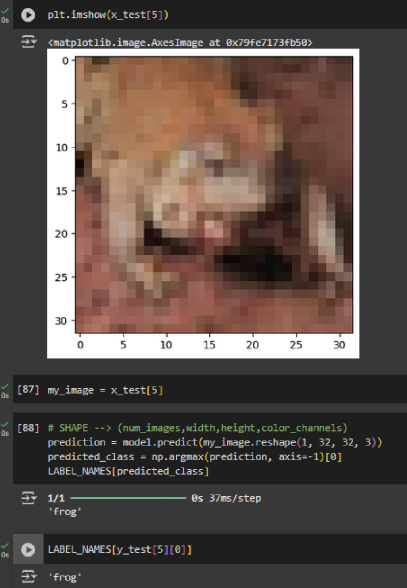

Introduction to Convolutional Neural Networks
Formative Activity
CNN Model Activity
In this unit, the activity consisted of discussing an article on the ethical concerns of facial recognition and a small experiment consisting of testing a trained CNN model.
Facial recognition technology is being increasingly used by police and security forces worldwide. Despite its widespread use, it raises serious ethical and accuracy concerns. Some potential for valuable applications exists, for example the article by Wall (2019) mentions stopping terrorist attacks by identifying suspects in crowds, but there are significant risks associated, caused by a striking racial and gender bias. The article cites a situation of severely misidentifying individuals, with the model decreasing in accuracy the darker the skin tone, also misgendering women as men because of this. Like any other machine learning model waiting to be implemented following very promising studies, patience needs to be exercised, because what may seem like an excellent idea in theory can cause serious problems in real life. As the article also highlights, it is not a good idea to bring something so unpredictable in such sensitive fields like police and military.
Testing the CNN model proved to be easy, albeit not without errors. I ran the code using Google Colab, and one of the cells quickly failed to run because, as I learned, the function used was part of an older version of TensorFlow. Because I was using Google Colab and my computer might not deal so well with the code, I decided to change the line as follows:
# SHAPE --> (num_images,width,height,color_channels)
prediction = model.predict(my_image.reshape(1, 32, 32, 3))
predicted_class = np.argmax(prediction, axis=-1)[0]
LABEL_NAMES[predicted_class]
After that, everything ran smoothly. I played with multiple images and found both errors and also perfectly true predictions:
 